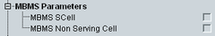

This section indicates the UE capabilities for MBMS reception.

Support of MBMS reception via an SCell.
SENSe:LTE:SIGN<i>:UECapability:MBMS:SCELl?
Support of MBMS reception via a serving cell to be added.
SENSe:LTE:SIGN<i>:UECapability:MBMS:NSCell?